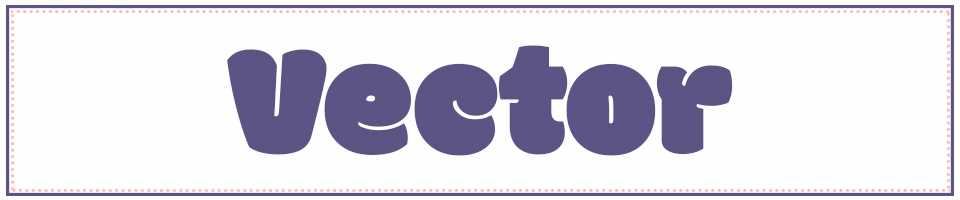
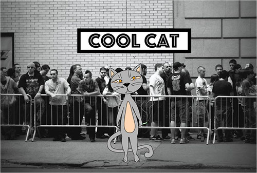

Home | Pixels | Vector | Motion | Print | Contact
The Vector project was inspired by my own cat.
I used my own doodles as a guide and finished the image with Illustrator tools.
It was freeing to express my own interests - music and cats - in this project.